3 Excel Features SOP
This document functions as an instruction manual for Excel features commonly used after a REDCap Report is downloaded. All examples were created using the az_demo and az_test datasets, which contain computer-generated sample data via the randomNames R package.
Note: An important step to conserve the order of the original data is to add an index column. Left click the first column. Select ‘Insert’ from the dropdown. Title the new column ‘Index’. Enter a 1 in the first row with data, a 2 to the second row, and a 3 to the third row. Select the cells with the 1, 2, and 3 indexes. Double-click on the small box on the lower right-hand side of the selected cells, which will auto-populate index values for all rows that contain data.
3.1 Find
- Highlight the data you wish to search. Use the shortcut ‘Ctrl + F’ on a
Windows or ‘Cmd + F’ on a Mac OR select the magnifying glass icon
 in the navigation pane.
in the navigation pane. - Enter the search keywords into the search bar and press enter to view.
- Continuing to press enter will cycle through all locations of the search keyword in the spreadsheet.
Ex:

- For a more advanced search, use the ‘Advanced Search’ window.

3.2 Find & Replace
Highlight the data you wish to search and replace. This can include a single or multiple columns, or the entire spreadsheet.
Use the shortcut ‘Ctrl + F’ on a Windows or ‘Cmd + F’ on a Mac OR select the magnifying glass icon
in the navigation pane and select ‘Replace…’ from the dropdown.

Enter the search keywords into the ‘Find what’ search bar.
- Enter the replacement into the ‘Replace with’ search bar. Ex: Replace a diagnosis acronym with the full name.

Click ‘Replace’ for a single cell replacement or ‘Replace All’ to replace all selected data.
3.3 Sort Data
- To Sort or Filter data, begin by selecting the columns or rows you wish to
filter. To add filters to all columns, click the downward triangle icon
 in the upper lefthand corner of the spreadsheet. This selects all data in the spreadsheet.
in the upper lefthand corner of the spreadsheet. This selects all data in the spreadsheet. - Navigate to the Editing dropdown on the Home tab in Excel.

- Click ‘Sort & Filter’ for a dropdown and select one of the three sort options:
- ‘Sort A to Z’ sorts alphabetically or numerically in ascending order.
- ‘Sort Z to A’ sorts alphabetically or numerically in descending order.
- ‘Custom Sort…’ opens a window for further sorting criteria.

Ex: Sort all data first by date of birth, then by race. Select the column ‘dob’ and order ‘Oldest to Newest’. Then select the ‘+’ to add another sort criteria. Select the column ‘race’ and order ‘A to Z’.

- Enter all sorting criteria, then select ‘OK’. The selected data will now be sorted using your desired order.
- To revert to original order, sort by the index column in ascending order.
3.4 Filter Data
Filters can be used to obtain desired data or remove unwanted data. With the filter tool, the user can specify column criteria they would like to be met and view only those rows. To remove unwanted data from a spreadsheet, filter the data to obtain what is NOT wanted, then delete those rows. When the ‘Clear’ filter is applied, the undesired rows will be removed from the spreadsheet. A filter will not remove the rows from the spreadsheet until the user manually deletes the rows.
- To Sort or Filter data, begin by selecting the columns or rows you wish to
filter. To add filters to all columns, click the downward triangle icon
in the upper lefthand corner of the spreadsheet. This selects all data in the
spreadsheet.
- Navigate to the Editing dropdown on the Home tab in Excel.

- Click ‘Sort & Filter’ for a dropdown and select ‘Filter’. The columns that were selected will now have a dropdown arrow.

- Select the arrow next to the column you would like to use as a filter. A box will pop up for the filter selection criteria.

-
Select all necessary criteria and ‘Apply Filter’.
- Note: if a filter is being used to view and delete unwanted rows, after applying the filter only the unwanted rows will be left. Select the rows to be deleted and delete as normal. When the filter is cleared, only the desired rows will be left in the spreadsheet.
To clear a filter and view all rows of data, repeat steps 2 and 3 but select the ‘Clear’ option instead. All data that was not manually deleted will remain.
3.5 Fill Empty Data
The Fill function allows the user to specify criteria to fill in any cells with missing data. This is a useful tool when certain information is only in one row of the data, but needs to be entered in all rows with the same Global ID, PTID, name, etc.
- Starting data will look something like below: data for certain columns will be missing for specific rows. For example, stub information might only appear for stub events and will not be in the visit rows of data. This information will be filled using the fill function.
- Select the column you need to fill. Press ‘Ctrl + G’ for the ‘Go To’ pop-up
window in Excel. Select ‘Special…’. A new pop-up window will appear. Select
‘Blanks’ and press OK. All empty cells will be highlighted.

- In the formula bar, enter the formula that matches the necessary criteria to
fill the cell.
- In this example, the formula is saying “If the id in cell 1-4 (1003) is equal to the id in cell 1-5 (1003), then the current cell equals the sex in cell 2-4 (Male). Else, leave the current cell blank (the id in cell 1-4 does not equal the id in cell 1-5).”
- Press ‘Ctrl + Enter’ to carry the formula into each empty cell. The Excel
formula will automatically move to the next cells down.

- If more than one column needs to be matched before filling the empty cells,
use an AND statement and separate matching criteria by a comma:
- Ex: If both Global ID and PTID needed to be the same to fill in the name of a participant, use the following statement in the formula bar (highlighting the cells accordingly):
- The above statement is saying in plain English: If the global id of cell 1 equals the global id of cell 2 and the ptid of cell 1 equals the ptid of cell 2, then the current cell equals the sex of cell 1. Else, leave the current cell blank (if global ids, or ptids, or both are not the same between the rows).
3.6 Delete Empty Rows
The following steps can be used to delete any completely empty rows from a spreadsheet. This will keep any rows that contain some information. If you export data and for any reason it has missing rows (see below) this is a quick and easy trick to remove those. 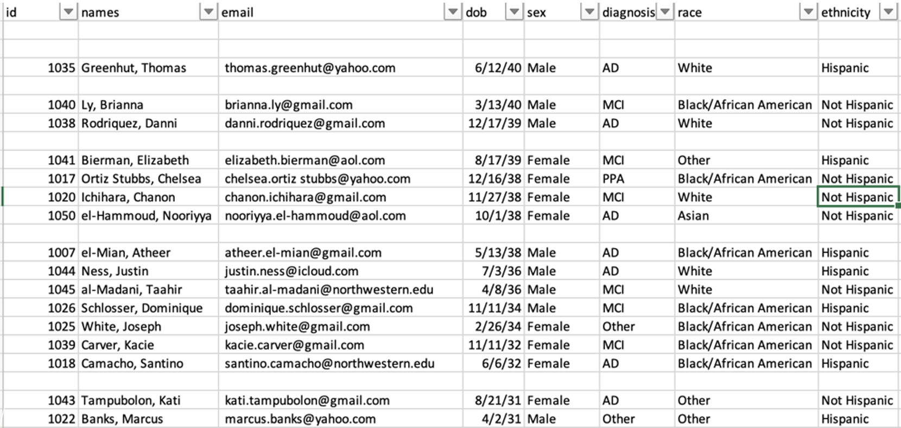
At the end of the data, add a new column labeled ‘Blanks’.
-
In the first cell of the ‘Blanks’ column, enter the formula as shown below for any columns that should contain data.
- Enter ‘=COUNTA()’ in the formula bar.
- Within the parenthesis, select all columns in the specific row that should contain data.
- Press ‘Enter’ to enter the formula. 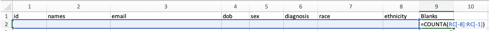
- Double click or drag the green box in the lower right corner of the cell to fill down the formula. 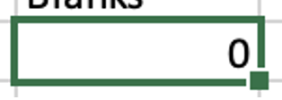 Any 0 values indicate that the row is empty. Any value greater than 0 indicates that at least one column has data.
-
Filter and delete all blank rows.
- Select the ‘Blanks’ column. Navigate to the filter window. Unselect all except ‘0’ values. 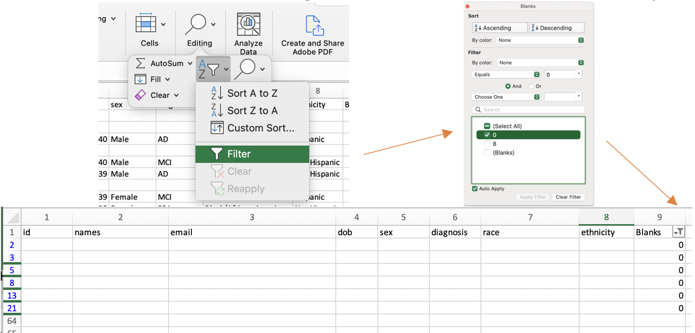
- Select all the rows with 0 values. Left click and select ‘Delete Row’.
Clear the filter. All empty rows will now be gone from the spreadsheet.
3.7 VLOOKUP
VLOOKUP uses a lookup value to find certain matches within the same spreadsheet or in another spreadsheet and return a user-specified value based on the match. The function takes the form:
=VLOOKUP(lookup_value, table_array, col_index_num, [range_lookup])
- Before you begin using the formula, determine what you are looking for and what
you will want returned. There are four items you need to fill in for the formula to work:
- lookup_value: the value you are searching for (a single cell)
- table_array: the range of the search (typically a column or multiple columns)
- col_index_num: the column of the desired return value within the table_array range
- range_lookup: TRUE if you want to locate an approximate match to your lookup_value; FALSE if you want to locate an exact match to your lookup_value
- Use the above formula within the first cell where you want the returned value to be entered.
- Drag the formula down to perform the VLOOKUP on all cells in a specific column.
The following examples will use two separate spreadsheets: one contains a list of participant ids and demographic information (az_demo); the other contains a list of participant id’s and visit dates and test scores (az_test).
3.7.1 Example 1:
Lookup participant id from az_test and add ‘sex’ from the az_demo spreadsheet to the az_test spreadsheet.
- Identify the cell where you want to perform VLOOKUP.
- I want to add ‘sex’ to column N in the az_test spreadsheet
- My first cell in column N with a participant id is N2
- Optional: add a column name
- Enter the following to begin the formula in the cell: =VLOOKUP( 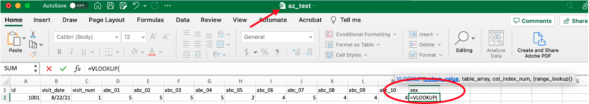
- Select the lookup_value and add a comma.
- My first lookup_value is id 1001 from the az_test spreadsheet, so I select cell A2 and add a comma to tell the formula I am ready to proceed. 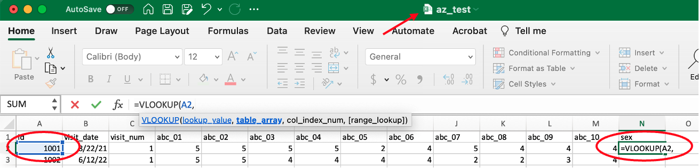
- Select the table_array (the range of columns where you want Excel to locate the lookup_value and the desired return value).
- My desired return value is ‘sex’ from the az_demo spreadsheet, which means I want Excel to search for my lookup_value in az_demo.
- Note: moving to another spreadsheet, you will see that the VLOOKUP formula moves to the formula line of that spreadsheet for ease of use.
- My range of columns starts with A (id) and ends with E (sex) in the az_demo spreadsheet, so I select columns A-E. 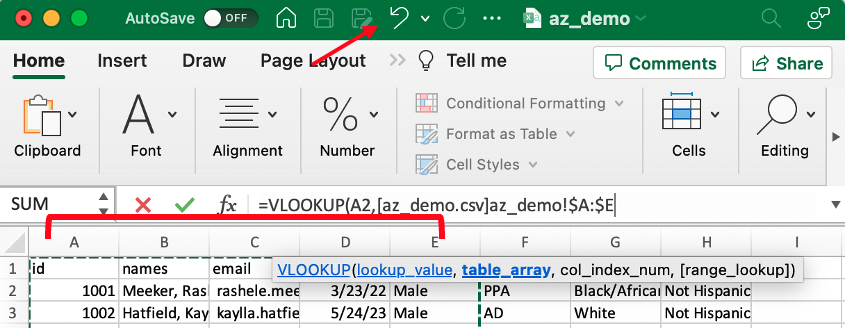
- Add a comma after the columns are selected to tell Excel you are ready to proceed.
- My desired return value is ‘sex’ from the az_demo spreadsheet, which means I want Excel to search for my lookup_value in az_demo.
- Identify the column_index_num of your desired return value within the range of table_array columns.
- table_array number always starts at 1, even if the first column of the range selected is not A.
- ‘sex’ is the 5th column, so my column_index_num is 5.
- Add a comma after the column_index_num to tell Excel you are ready to proceed. 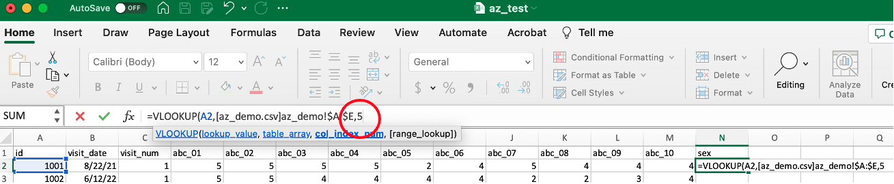
- Enter TRUE or FALSE for your [range_lookup]. FALSE will only look for exact matches.
- Typically, you will always want an exact match, so your [range_lookup] will be FALSE.
- In this case, I want an exact match to id 1001 from my az_test spreadsheet to my az_demo spreadsheet, so I enter FALSE.
- Add a close parenthesis to finish the formula.

- Press ‘Enter’ and the formula will complete the VLOOKUP.
- I now have the desired return value of sex for id 1001. 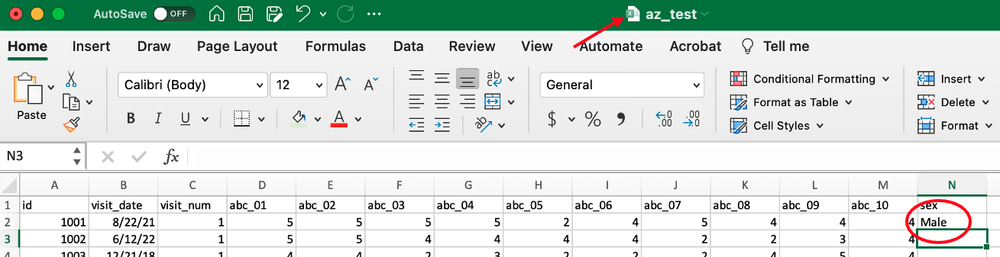
- To complete the VLOOKUP for the entire column of id values, drag the green corner to the end of the spreadsheet or double click the small green box when cell N2 is selected, which will automatically drag the formula down. 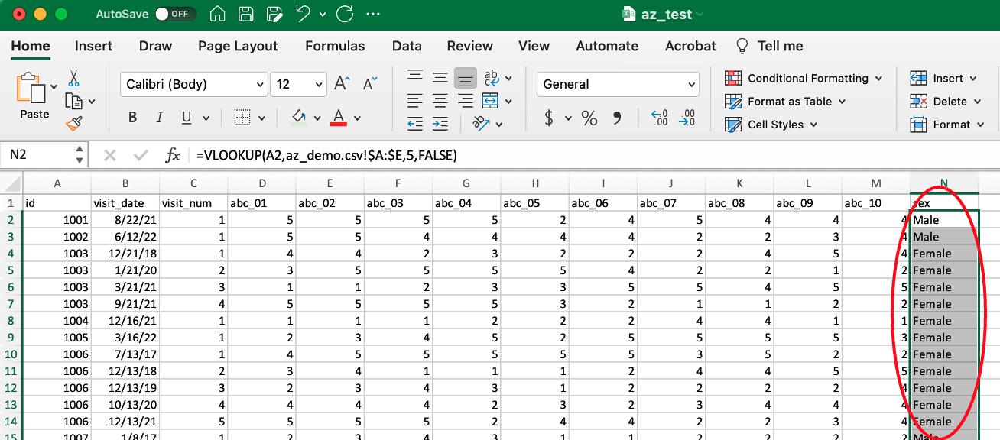
3.7.2 Example 2:
Lookup participant id from az_demo and determine the earliest visit date for each participant from az_test data.
- Identify the cell where you want to perform VLOOKUP.
- I want to add ‘first_visit_date’ to column I in the az_demo spreadsheet
- My first cell in column I with a participant id is I2
- Optional: add a column name
- Enter the following to begin the formula in the cell: =VLOOKUP( 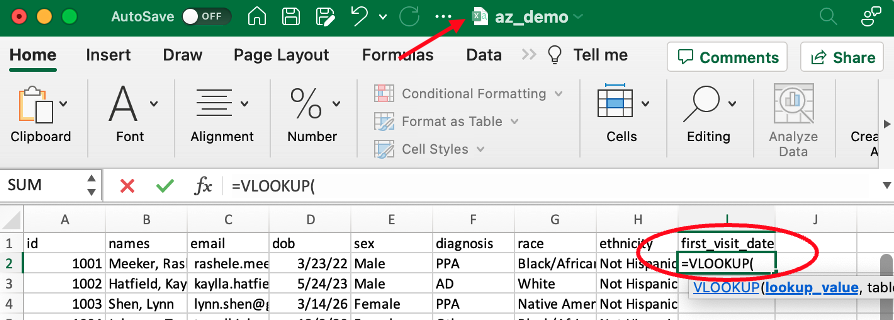
- Select the lookup_value and add a comma.
- My first lookup_value is id 1001 from the az_demo spreadsheet, so I select cell A2 and add a comma to tell the formula I am ready to proceed. 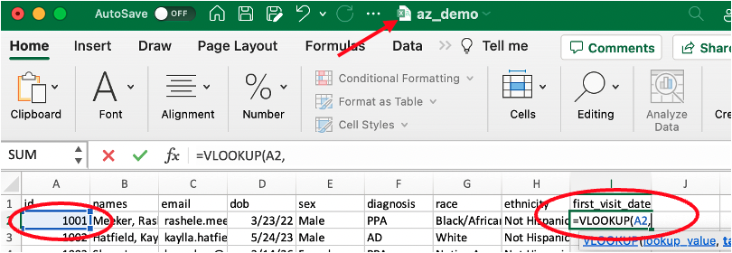
- Select the table_array (the range of columns where you want Excel to locate the lookup_value and the desired return value).
- My desired return value is ‘visit_date’ from the az_test spreadsheet, which means I want Excel to search for my lookup_value in az_test
- Note: moving to another spreadsheet, you will see that the VLOOKUP formula moves to the formula line of that spreadsheet for ease of use.
- My range of columns starts with A (id) and ends with B (visit_date) in the az_test spreadsheet, so I select columns A-B. 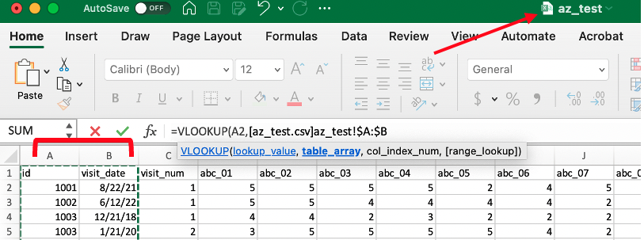
- Add a comma after the columns are selected to tell Excel you are ready to proceed.
- My desired return value is ‘visit_date’ from the az_test spreadsheet, which means I want Excel to search for my lookup_value in az_test
- Identify the column_index_num of your desired return value within the range of table_array columns.
- table_array number always starts at 1, even if the first column of the range selected is not A.
- Since I want the first visit date, I preface my column_index_num value with the MIN() function.
- Note: Other functions can be used to specify which value to return for each id’s visit dates. MAX() will return the latest visit date. AVG() can be used to average test scores for a participant, etc.
- ‘visit_date’ is the 2nd column, so my column_index_num is 2.
- Add a comma after the column_index_num to tell Excel you are ready to proceed. 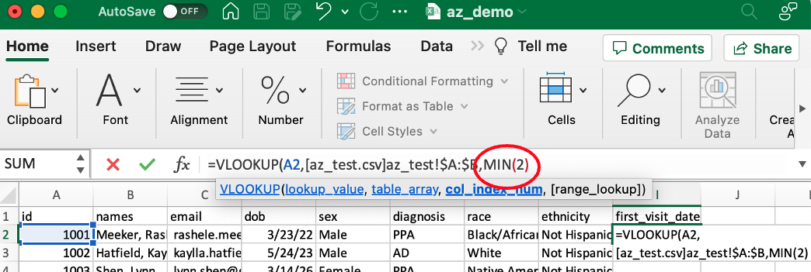
- Enter TRUE or FALSE for your [range_lookup]. FALSE will only look for exact matches.
- Typically, you will always want an exact match, so your [range_lookup] will be FALSE.
- In this case, I want an exact match to id 1001 from my az_test spreadsheet to my az_demo spreadsheet, so I enter FALSE.
- Add a close parenthesis to finish the formula. 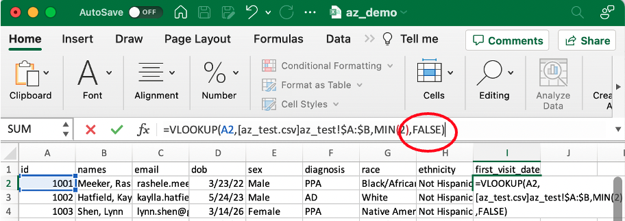
- Press ‘Enter’ and the formula will complete the VLOOKUP.
- I now have the desired return value of first_visit_date for id 1001. 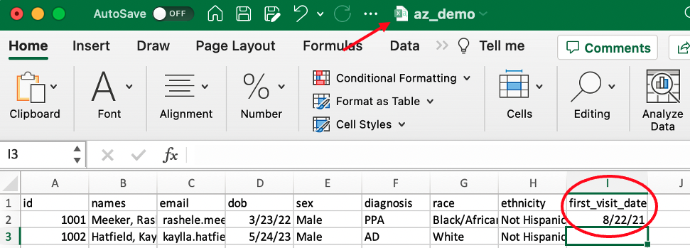
- To complete the VLOOKUP for the entire column of id values, drag the green corner to the end of the spreadsheet or double click the small green box when cell N2 is selected. 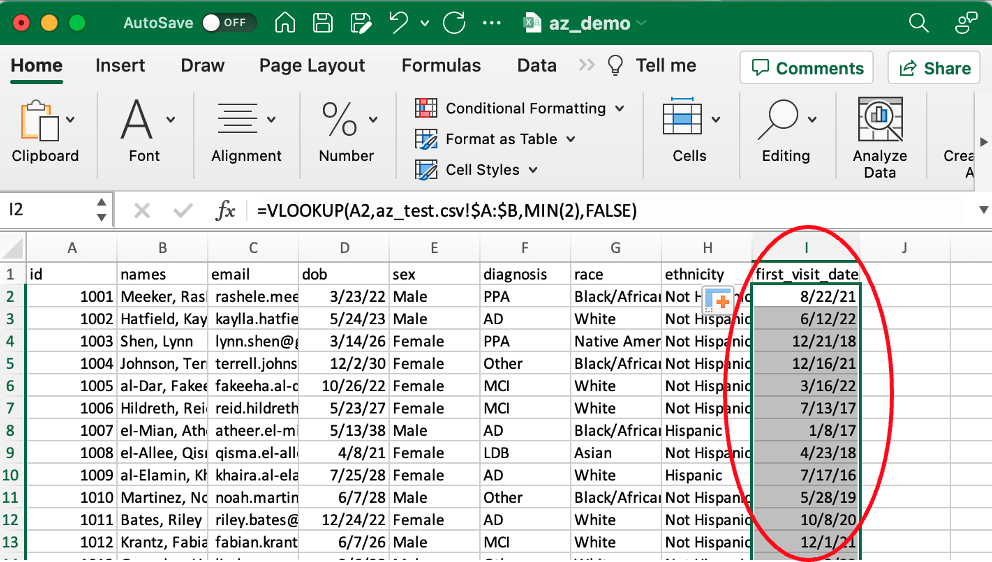
References: https://support.microsoft.com/en-us/office/vlookup-function-0bbc8083-26fe-4963-8ab8-93a18ad188a1